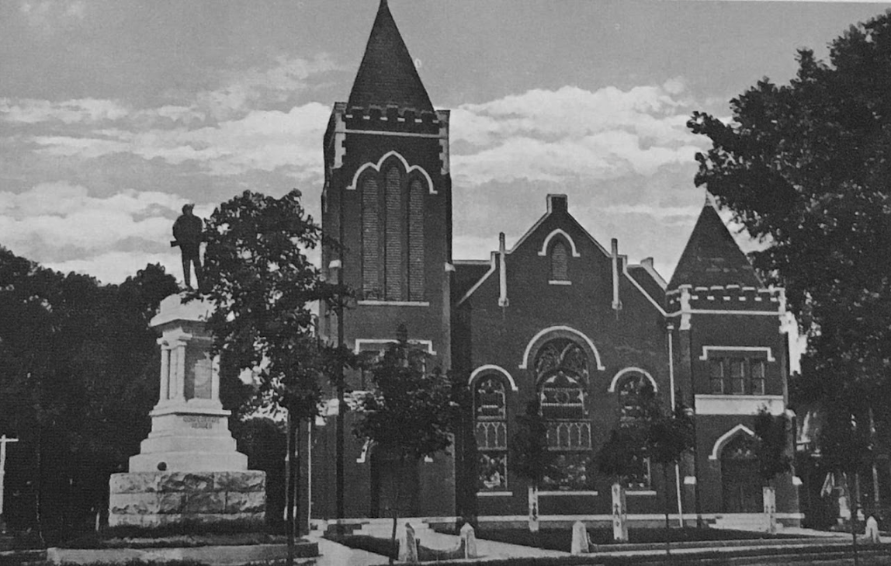

Farmville United Methodist Church/Confederate Statue
Introduction
The site of Methodist worship since 1832, Farmville United Methodist's current building was constructed in 1907. It was one of the four churches that young African-American protestors attempted to integrate on Sunday, July 28, 1963, but after entering the building, most white congregants left, and the minister asked the youths to leave.
The monument to Confederate soldiers on the corner of Randolph and High Streets was dedicated on Oct. 11, 1900. Its inscription, "Defenders of State Sovereignty and Individual Liberties," provided the name to the eighteen-county organization supporting segregation, commonly shortened to the "Defenders." They likened their opposition to the Brown vs. Board decisions as part of a historical conflict between national and local authority.
Photo: John Miller
Read MoreThis bronze and granite monument to Confederate soldiers was one of many memorials to the "Lost Cause" erected in Southern towns in the decades preceding and following the turn of the century. These monuments honored Confederate soldiers from the local communities (in this case, eight companies of infantry and cavalry organized in Prince Edward County), but they also served an ideological purpose.
For example, the monument's claim that the Confederates were "Defenders of State 'Sovereignty'" spoke to the desire at the end of the 19th century to reframe the Civil War not as a conflict to end or preserve slavery, but as a fight over the primacy of national or states' rights. This rhetorical gesture helped characterize Confederate soldiers as models of masculine, principled virtue in white Southern public memory.
Farmville's own memorial had its origin in August 1895 with an interest meeting for the Prince Edward Memorial Association. Like other Confederate memorialization efforts, it was chiefly supported by the local chapter of the United Daughters of the Confederacy. The heritage group helped raise money through private donations and fundraising parties and concerts. It's unclear why the monument was placed at this location; local historians speculate that one of the major individual donors may have been a member of the Methodist Church. The seven-foot tall soldier was designed by Charles M. Walsh of Petersburg, and the entire monument was manufactured by Petersburg Marble Works.
Following the dedication of the monument, the Memorial Association and the UDC deeded the monument to the town in 1905. Today it serves as a site for local students to study the shifting narratives of Southern and local history.
Explore Map Back to Places